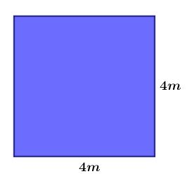

ShapeCraft
ShapeCraft
Quadrado
Uma forma simétrica com quatro lados iguais e ângulos retos, fácil de reconhecer e calcular, presente em diversas estruturas do cotidiano. O cálculo da área de um quadrado é simples, se baseia apenas na multiplicação do lado pelo lado.